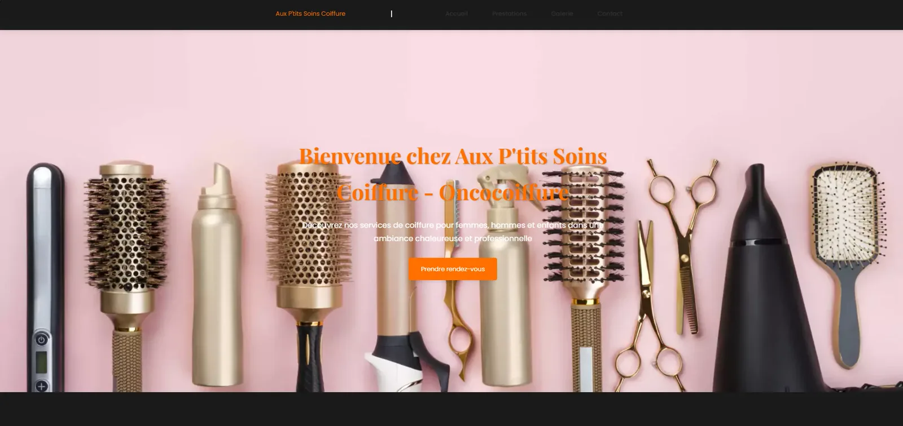
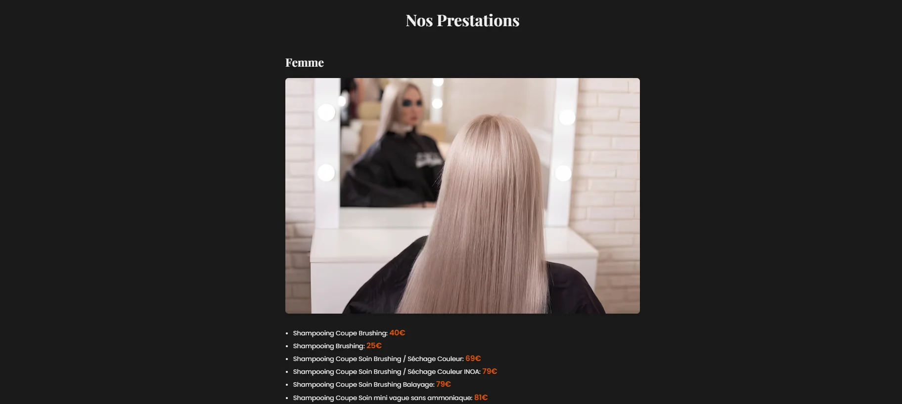
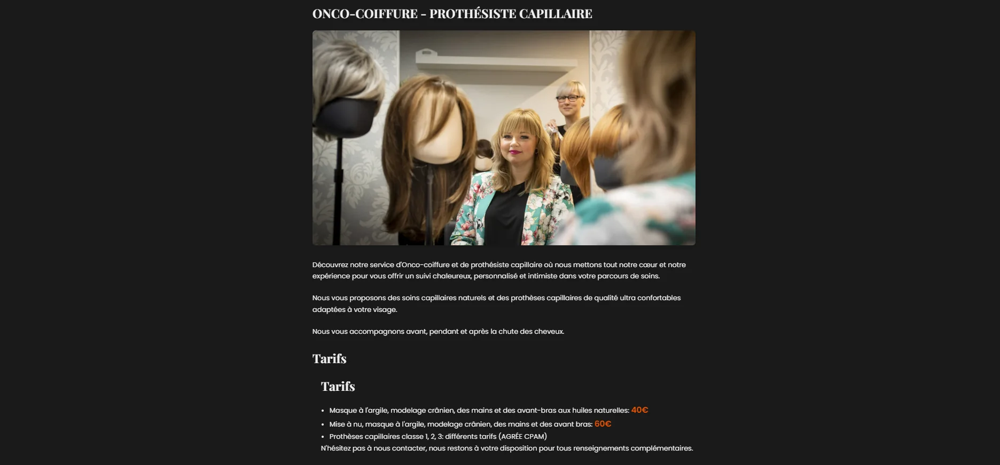
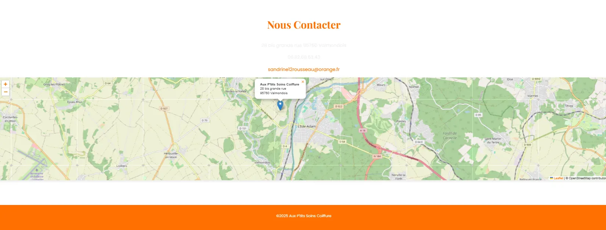

Premier projet client reel : conception, mise en ligne, puis maintenance active d'un salon de coiffure independant.
Une commercante independante, coiffeuse, voulait developper sa clientele en ligne et proposer la prise de rendez-vous depuis son site. Elle n'avait ni budget important ni site existant. J'ai concu et developpe ce projet de bout en bout, puis je suis reste responsable de la maintenance, des evolutions et du support technique depuis la mise en ligne en 2024.
Ce projet a une particularite que les projets scolaires n'ont pas : il est en production reelle. Une erreur a un impact direct sur les rendez-vous d'une vraie commercante. Ca change la facon dont on teste, dont on deploie, dont on communique les changements.

Interface claire et elegante, pensee pour une clientele de tous ages.

Services detailles avec tarifs, photos et descriptions accessibles.

Section dediee a un service specialise : accompagnement personnalise pour les patients en traitement.

Informations pratiques et formulaire de prise de rendez-vous simplifie.
Travailler avec un vrai client, c'est apprendre la relation client autant que le developpement. Il faut savoir reformuler un besoin flou ("je veux quelque chose de beau et moderne") en specifications concretes, expliquer les contraintes techniques sans jargon, et gerer les demandes de modification qui arrivent apres la mise en ligne.
La maintenance long terme m'a aussi appris l'importance de coder de facon lisible et documentee, pas juste pour aujourd'hui mais pour "moi dans six mois" qui devra modifier quelque chose rapidement sans casser le reste.